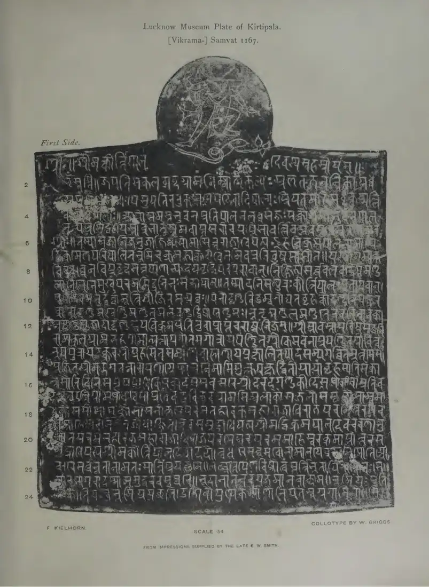
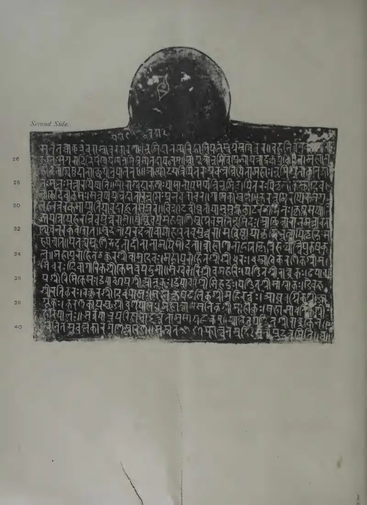

Lucknow Museum plate of Kîrtipâla ; [Vikrama-]Saṅvat 1167
LUCKNOW MUSEUM PLATE OF KIRTIPALA;
[VIKRAMA-]SAMVAT 1167.
This plate was brought by a tenant to a fair at Bhatpar in the Gôrâkhpur district, United Provinces, and sold as waste to a copper-smith. Dr. W. Hoey who heard of this followed up the plate to another district and, having recovered it, presented it in September 1898 to the Provincial Museum, Lucknow. I edit the inscription which it contains from excellent impressions, sent to Dr. Hultzsch by the late Mr. E. W. Smith.
This is a single copper-plate which measures about 11 ¾" broad by 1' high, not including a semicircular projection12 which rises from the middle of the top and is about 4" broad and 3 ¼" high. On the front side of this projection there is a neatly engraved figure of the god Vishnu
1 Metre of verses 1-9: Slôka (Anushtubh).
2 Read chhattram.
3 Perhaps altered to niyatam, which it should be.
4 Originally vasundhaînrâm.
5 Read haran.
6 Read dattâm.
7 Read dânâch.
8 Metre: Pushpitâgrâ.
9 Read âmbuvindu-lôlâm.
10 Read manushya-jîvitam.
11 Read saînvat.
12 Similarly shaped is e.g. the Gurmha (in Gôrâkhpur district) plate of Jayâditya II, Jour. Beng. As. Soc. Vol. LXX. Part I. Plate i. In the Gôrâkhpur grant of the time of the same prince (see my List of North. Inscr. No. 604) the projection is at the proper right side of the plate.
in his boar incarnation,1 with a small figure of a woman (representing the earth) resting, as it seems, on one of the god's arms. The god himself is represented as standing over a serpent, in front of which there is a flower. On the back the projection contains the engraving of a conch-shell. The writing commences immediately beneath the projection and covers the whole of the first side and two-thirds of the second side of the plate. It is well preserved nearly throughout. The size of the letters is between and . The characters differ little from the ordinary Nâgarî. The language is Sanskrit, but some of the names towards the end of the inscription appear in their vernacular forms or rather in forms based on them. Lines 2-12 contain six verses, five of which give the genealogy of the donor, and lines 21-33 contain benedictive and imprecatory verses. Of the introductory verses two (verses 2 and 6) are incorrect. Owing to carelessness on the part of the writer or engraver the text, besides numerous minor errors, contains several corrupt passages, one or two of which I am unable to correct with confidence. In respect of orthography it may suffice to state that the letter v denotes both v and b, and that the dental sibilant is often used for the palatal.
The inscription records a grant of land by the Paramabhaṭtâraka Mahârâjâdhirâja Paramêsvara, the devout worshipper of Mahêsvara (Šiva), the glorious Kîrtipâladêva, who by inheritance had obtained the lordship over Uttarasamudra, and who meditated on the feet of the P.M.P., the devout worshipper of Mahêsvara (Šiva), the glorious Vikramapâladêva, who had acquired the lordship over Uttarasamudra by his own arms (ll. 18-21). The document differs from other grants in this that it does not contain an order to officials and others, but simply records the fact that the king made a certain donation.
The text, after the auspicious word śrîh, commences with the words "this is the own hand of the glorious Kîrtipâladêva," words such as we ordinarily find at the end of a grant. Then follow the words ôm ôm svasti, and a verse glorifying the god Paśupati (Šiva). After that, verses 2-6 give the donor's genealogy. There was a king (nripa) Bhuvanapâla, an ornament of the rulers of the earth of the family of Sâvarni (Manu), descended from the Sun. His son was Vikramapâla, who by his own arms acquired the sovereignty over Saumyasindhu (i.e. Uttarasamudra). And his son again was Kîrtipâla.
This Kîrtipâla, having worshipped the god Nârâyaṇa (Vishnu), in his presence, on a date which will be considered below, gave two villages to the Brâhmaṇ, the Thakkura Prahasitaśarman, who was born at a bhaṭta-village, viz. the village of Davirâmakula in the Śrâvastiya-vishaya, belonged to the Gautama gôtra, and was a son of the Paṇḍita Viśvarúpa and grandson of the Paṇḍita Kêśava. Both villages were in the Daradagaṇḍaki country (dêśa); one was the village of D[amba]üli (or perhaps Dêvaüli), which belonged to (the) Sashô[ravi?]sâ (district), and the other the village of Vikara, belonging to (the) Shô[thâ?]visâ (district; ll. 12-17).
The names of three of the localities mentioned in the preceding paragraph unfortunately are partly so indistinct in the original that I am unable to make them out with certainty; and I have not succeeded in identifying any of the places on the maps at my disposal. With the passage describing the birth-place of the donee we may compare above, Vol. III. p. 357, l. 38, Śrâvasti-maṇdané(lé) Kâsîlli-bhaṭtagrâma-vinirggatâya;2 the name Daradagaṇḍaki must be connected with the river Gaṇḍakî (the Great or Little Gandak in the United Provinces); and the names of the two districts remind one of similarly ending names of districts in the grants
1 Compare Gupta Inscr. p. 159. In the Jour. Beng. As. Soc. Vol. XVII. Part I. p. 306, Captain J. Cunningham, describing a sculptured representation of Vishnu as the boar, at Pathârî, says: 'The statue is about 4½ feet high; it is covered with figures disposed in ranks; it has a diminutive woman hanging by the tusk of the god, and the remains of a serpent may be traced on the ground on which it is standing.'
2 Compare also Ind. Ant. Vol. XVII. p. 121, l. 35, śrî-Madhyadêś-âintahpâti-Takkârikâbhaṭtagrâma-vinirggata.
of the kings of Kanauj. With the name Đavirâmakula one may perhaps compare the name 'Ramkola,' which occurs in the Gôrâkhpur district, Indian Atlas, sheet No. 102, long. 83° 54', lat. 26° 54'.
The donation, in lines 15 and 16, is stated to have been made on the second tithi of the bright half in the month Phâlguna, at a saṅkrânti of Brîhaspati (or Jupiter), on a Saturday, in the year 1167, given in words; and the same data, without the reference to Jupiter's position, are repeated in figures in line 40. So far as I know, in quoting a saṅkrânti of Jupiter the date is quite unique. For the Vikrama year 1167 expired it regularly corresponds to Saturday, the 11th February A.D. 1111, when the second tithi of the bright half of Phâlguna commenced 0 h. 47 m. after mean sunrise. As the true longitude of Jupiter at mean sunrise of this day by the Sûrya-siddhânta was 1s 0° 2.5', Jupiter had entered the sign Vrîshabha 12 h. 2 m. before mean sunrise of the given day. The result shews that, instead of saying Brîhaspati-saṅkrântau, the writer might have said, more accurately, Brîhaspatêr=Vrîshabha-saṅkrântau, 'at the time of Jupiter's entrance into the sign Vrîshabha.'1
After recording the grant, the inscription in line 21 ff. has two verses containing prayers addressed to the Earth, and after that a number of benedictive and imprecatory verses, introduced by the words "speech of the sacrificer (or donor) after granting the land." These verses are followed in lines 34-39 by the names of 17 persons, each of which has prefixed to it a title shewing his rank or occupation or official position. Of these titles those which I do not remember to have met elsewhere are Âshṭavargika, Daivâgârika, Mahârthasâsanika(?) and Šaṅkhadhârin. Of the names themselves Ânûka, Jâgûka, Kêsavapadumâ, Mahichanda, Mahîka, Rândhûka, Sâikhâka and Sihađa2 may be drawn attention to.—The grant itself is called in line 39 a tâmrasya paṭṭakam; it was caused to be engraved by the Paṇdita Rândhûka, and engraved by the goldsmith Gaṇêsvara (ll. 39 and 40).
I have not found hitherto any reference to the kings or chiefs of Uttarasamudra and am unable to locate their principality. Apparently it must have been somewhere between the Gogra and Gandak rivers and Nêpâl.
TEXT.3
First Side.
| 1 | Śrîḥ || Śrîmat-Kirttipâla- | dêvasya sva-hastô=yam || |
| 2 | Ôm4 ôm svasti || Jayati5 sakala-[ś]avda(bda)grâma-nirmmâna-kalpa(lya)ḥ praṇata-jana-nikâya-dhva- | |
| 3 | sta-sainsâra-sa(śa)lyaḥ | Pasu(śu)patir=anuruddh-âsê(śê)sha-dêv-âdi-pâlyaḥ priyatama-himadhrîktudmalli-6 | |
| 4 | kâmôda-mâlyaḥ || [1*] 7Âs[i]t=samasta-bhuvana-pratipâlana-ladhva(bdha)-saṅjñaḥ Sa(śa)kr-ôpamô Bhuvanapâla- | |
| 5 | nṛipa[h*] prasiddhaḥ | yas=Tivrabhânu-saṅhavâpta-sa(śa)rîrayashti-Sâvarṇñi-va[n]sa-8 vasudhêsva(śva)ra-sê(śê)khara- | |
| 6 | śrîḥ || [2*] Tasy=âtmajâ(jô) nijabhuj-ârrjjita-Saumâsinva-9râjâdhipatya iha Vikramapâla-nâmâ | ya- |
1 Compare Ind. Ant. Vol. XV. p. 113, l. 12, savituḥ Kumbha-saṅkrântau.
2 See the names Jâgûka, Padumê and Sihađa in the list given above, Vol. IV. p. 171 ff.
3 From impressions supplied by the Curator of the Provincial Museum, Lucknow.
4 Denoted by a symbol.
5 Metre: Mâlinî.
6 In the original the reading given here is quite clear; I can only suggest -Himabhâbhrîd=malli-.
7 Metre of verses 2-4: Vasantatilakâ. The first Pâda of verse 2 contains three syllables too many.
8 Read -vamâa-.
9 Read -Saumyasindhu-, a synonym of Uttarasamudra in lines 19 and 20 below.
7 d-vikramêna paripâlita-bhûmichakram=ahny=akka-vôdhitam=iva prativushṭasâsît1 || [3*]
Yas=ch=âgam-ôkta-
8 vivu(bu)dh-ârvva(rchcha)na-vipra-vṛinda-santarppan-âbhyudaya-vṛiddhi-paramparâ v â n |
ni[r]jjitya sarvva-va(ba)lavad-ripu-maṇda-
9 lâni lôbhê sukham paramam=Indra-nibhah sabhâyâm || [4*] 2Tasmâd=a[ja*]ni
sat-putrah Kirttipâlah pratâpavân |
10 Sûryâd=iva Manur=ddhanvî mûrttiśrî-jita-Manmathah || [5*] 3Yên=ôddaṇda-
viðamva(mba)n-ôdyata-vṛi(bri)hat-kôdaṇda-ni[r*]yach-chhara-
11 vrât-ôddaṇdam=akhaṇdi maṇdalam=alam [cha]ṇda-dvishâm khaṇdasa(śa)h|
bhûbhṛin-maṇdala-maṇdanêna va(ba)linâ takvâ(tkâ)-
12 ladaṇda-srijâ4 dôrddaṇda-dvaya-vikrama-pratibhuvâ prâptam cha râjyam nijam ||
[6*] Śrî-Stâvastâya-5vishaya-Davi-
13 râmak[u]la-grâmê6 bhaṭṭagrâm-â(ô)tpanâya Gautama-gôtrâya paṇdita-śrî-
Kêsa(śa)va-nâpra7 paṇdita-śrî-Vinva(śva)-
14 rûpa-putrâya ṭhakkura-śrî-Prahasitasa(śa)rmmaṇa(ṇê) vrâ(brâ)hmaṇâya prakshâlita-
pâda-samyag-archchita-mû[r*]ttayê sam-
15 pûjita-śrîmad-bhagavan-Nârâyaṇ-âgrê Phâl[gu]nê mâsi su(śu)kla-paksha-
dvitiyâyâm Vṛi(bri)haspati-saṁkrâ-
16 ntau Sauri-dinê saptashashty-adhikê êkâdasa-savatsarê8 śrî-Daradagaṇdaki-
dê[sê(sé)]9 Sashô[ravi?]sâ-prativa(ba)-
17 ddha[h]-10D[amva(mba)]üli-11grâma-Shô[thâ?]visâ-prativa(ba)ddha-Vika r a - g r â m a12
saalâkau18 sa-jalau sa-sthalau s-âmra-ma-
18 dhûkau sa(sva)sîsâ(mâ)-yuktau sâ(śâ)sanîkritya paramata(bha)ṭṭâraka-mahârâjâdhirâja-
paramêsva(śva)ra-para-
19 mamâhêsva(śva)ra-nijabhujôpârjjit-Ôttarasasû(mu)dr-âdhipatya-śrîmad-Vikram a p â l a -
dêva-charaṇânu-
20 dhyâta-paramabhatṭâraka-mahârâjâdhirâja-paramêsva(śva)ra-paramamâhêsva(śva)ra-kram-
âpt-Ôttarasa-
21 mudr-âdhipatya-śrîmat-Kirttipâladêvô dadau |(||) Tvam14 Dharê sa[r]vva-
savô(ttvâ)nâm=âlayê16 Vra(bra)hma-nirmô(rmmi)tê | â-
22 dhârê sarvva-bhûtânâm=atah sâ(śâ)ntin prayachchha mê || [7*] Lakshmî-
tû(rû)pêna Vishṇau tvam sû(mû)rtti-bhûtâ Yi(pi)nâ[kina]h| sam-
1 Here again the writing in the original is quite clear; I would suggest =ahny=arkka-bôdhitam=iva pratibuddham=dsît, but am not sure that this is the intended reading.
2 Metre: Ślôka (Anushṭubh).
3 Metre: Śârdûlavikrîdita.
4 The metre is faulty, but the reading is quite clear in the original, and I do not see what correction could be suggested. The author apparently pronounced srijâ as srijâ.
5 Read -Śrâvastiya-.
6 The sign for ê of mê may have been struck out, and in my opinion the reading should be -grâma-bhatṭa°.
7 Read -naptrê.
8 Read -adhika êkâdaśa-śata-saṁvatsarê.
9 After the akshara dê there are two marks in the plate shewing that something has been omitted, and on the margin at the bottom of the plate is the akshara sê with the figure 9, indicating the 9th line from the bottom (i.e. line 16).
10 This sign of visarga may have been, and should be, struck out.
11 Possibly the name in the plate may be Dêvaüli.
13 Here one would have expected -grâmau.
13 Originally sialâkau was engraved, but the vowel i of the first syllable has been struck out; perhaps it was wrongly put in the place of the sign for au which one would have expected at the end of the preceding word (grâma). I am unable to explain saalâkau, and can only suggest that the right reading may be either sa-pâṭakau or sa-pallikau. Sa-pâṭaka occurs frequently in the grants of Northern India of the same period; and for sa-pallika compare sva-pallik-ôpêta in the Gurmha plate of Jayâditya II., Jour. Beng. As. Soc. Vol. LXIX. Part I. p. 91, l. 12.
14 Metre of verses 7-20: Ślôka (Anushṭubh).
15 Read =âlayô, and further on -nirmmitah and âdhârah.
Plate 1 is bound after this page.
Plate 2 is bound after this page.
23 sâra-sâgarâd=asmân=samuddhara Vasundharê || [8*] Bhûdân-ânantaram yajamâna-[vâkya]m || Bhûmim yah prati-
24 grî[hṇâ]ti yas=cha bhûmim prayachchati | ubhau tau punya-karmmâpau niyatam svargga-gâminau || [9*] Si[m*]hâ-
Second Side.
25 sanam tathâ chchhatram(ttram) var-âsvâ(sâ) vara-vâraṇâh | bhûmi-dânasya chihnâni phalam svarggas=tath=aiva cha || [10*] Va(ba)hubhir=vvasudhâ [datt]â râ-
26 jabhê(bhi)h Sagar-âdibhir=yasya yasya yadâ1 bhûmis=tasya tadâ2 tadâ phalam || [11*] Prâg=dattâm bhûmim viprêbhyô yatnâd=raksha Yudhishthira | mahyâm ma-
27 hîbhrîtâm śrêshṭha dânâch=chhrêyô=nupâlana[m] || [12*] Âsphôṭayanti pitaraṇh pravalganti pitâmahâh | bhûmi-dâtâ kulê jâ-
28 taṇ sa naṇ santârayishyati || [13*] ³Ghôrâś=cha dâruṇâh pâsâ(sâ) n= ôpasarppanti bhûmi-dam |(||) [14*] Pitaraṇ pitṛilôka-sthâ dêva-
29 lôkê divaukasaṇ | santarppayanti dâtâram bhûmêh prabhavatâm vara || [15*] Gâm=êkâm svarṇpam=êka[ri*] ra(cha) bhûmêr=apy=êkam=arngu-
30 lam [*] haran=narakam=âyâti yâvad-âhûtasamplavam || [16*] Vindhy-âṭavîshv=atôyâsu su(śu)shka-kôṭara-vâsinaṇ | kṛishpasarppâ [h]i |
31 jâyantê yê haranti vasunva(ndha)râm || [17*] · Shashṭhim(shṭim) varsha-sahasrâṇi sva[r]ggê vasati bhûmi-daṇ | âchchhêtvâ(ttâ) ch=ânumantâ va(cha) tâ-
32 ny=êva narakam(kê) vaśê(sê)t || [18*] Sva-dattâm para-dattâ[m] vâ yô harêta vasudhva(ndha)râm | sa vishṭhâyâm kṛimir=bhûtvâ pitṛibhiṇ sa-
33 ha pachyatê || [19*] Patanty=asrû(śrû)ṇi [ru]datâm dînânâm=api sîdatâm | vrâ(brâ)hmaṇânâm hṛitê kshêtrê hatyâttvipurusham4 ku-
34 lam || [20*] Mahâpurôhita-ṭhakkura-śrî-Vâmu(su)dêvaṇ | mahâpurôhita-śrî-Śrîdharaṇ | dharmmâdhikaraṇika-śrî-Ma-
35 sivaraṇ5 | daivâgârika-śrî-Kêsa(sa)vapadumâ || sam(śam)khadhâri-śrî-Va(vâ)ma-hariṇ | paṇḍita-śrî-Rânvû(ndhû)kaṇ | upâdhyâ-
36 ya-śrî-Risikêsaṇ | upâdhyâya-śrî-Ânûkaṇ | upâdhyâ[ya*]-śrî-Sihaṇaṇ | para ta-śrî-Sânikhâkaṇ | daivajūa-
37 śrî-Ratichha(ka)raṇ | va(ṭha)kkura-śrî-Dêvapâlaṇ | mahâkshapaṭalika-śrî-Mahira(cha)ndaṇ | âshṭavarggika-śrî-Jâ-
38 gûkaṇ | karaṇakâyastha-śrî-Vaṇapâlaṇ6 | mahâtthâ[sâ]sanika-⁷śrî-Mahîkaṇ8 | sa(ma)hâsâdhanika-śrî-
39 Haripâlaṇ || ⁹Sarvva-pâtra-parijñâ[n]âd=dattam tâmrasya paṭṭakam || Khânitani paṇḍita-śrî-Rânvû(ndhû)kêna ||
1 This word was originally omitted and is engraved on the margin at the top.
2 This word also is engraved on the margin at the top, wrongly for tasya.
3 Half of this verse has been omitted by the writer. 4 Read hanyât=tri-purusham.
5 Read -Śasidharaṇ.
6 Possibly the reading may be -Varṇapâlaṇ.
7 The vowel d of the akshara tthâ may have been struck out. The akshara in brackets is faintly engraved; it looks as if originally sa had been engraved and as if this had been either struck out or altered to sd. Read mahârtthasâsanika-(?).
8 Originally -Mđhikaṇ was engraved, but the d of md is struck out.
9 This is half a Slôka.
40 khanitain1 suvarṇpakâra-Gaṇesva(śva)rêṇa || Samvat2 1167 Phâlva(lgu)na-sudi
2 Sa(śa)nau pradattam=iti || gva3 ||
1 Wrong for khâtam.
2 Read samvat.
3 Compare the symbol which looks like chha, e.g. above, Vol. IV. p. 101, note 8.

